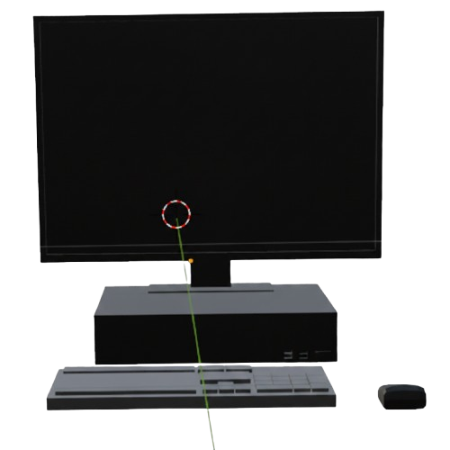
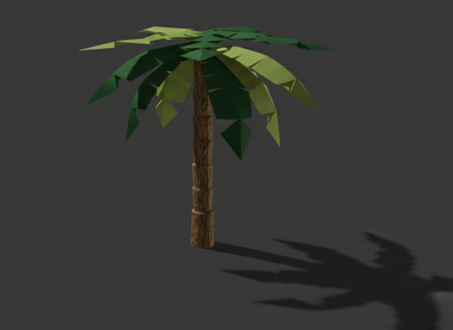
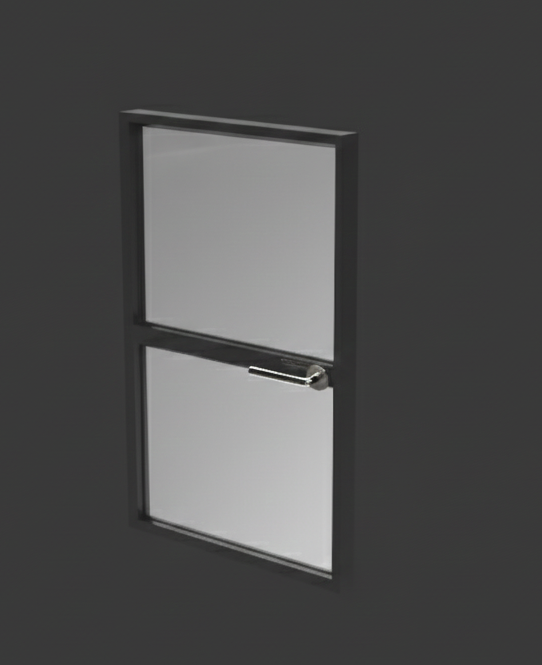

Texturizado y Aplicación de Materiales
Categoría: Post-producción 3D / Materiales
Descripción del Proyecto
En este apartado presento mi trabajo enfocado en la creación y aplicación de texturas PBR (Physically Based Rendering). Mi proceso consiste en seleccionar cuidadosamente materiales como maderas, textiles y acabados de concreto para dar realismo a los modelos 3D. Me especializo en crear atmósferas con tonos suaves y claros, cuidando que el brillo y la rugosidad de cada superficie aporten a la armonía general del espacio.
Galería
Vista frontal con texturas de metal:

Detalles de esculpido:

Modelado tipo low poly, renderizado y texturas basicas

Modelado con texturas basicas:

*Modelado realizado cuidando la ergonomía del usuario.